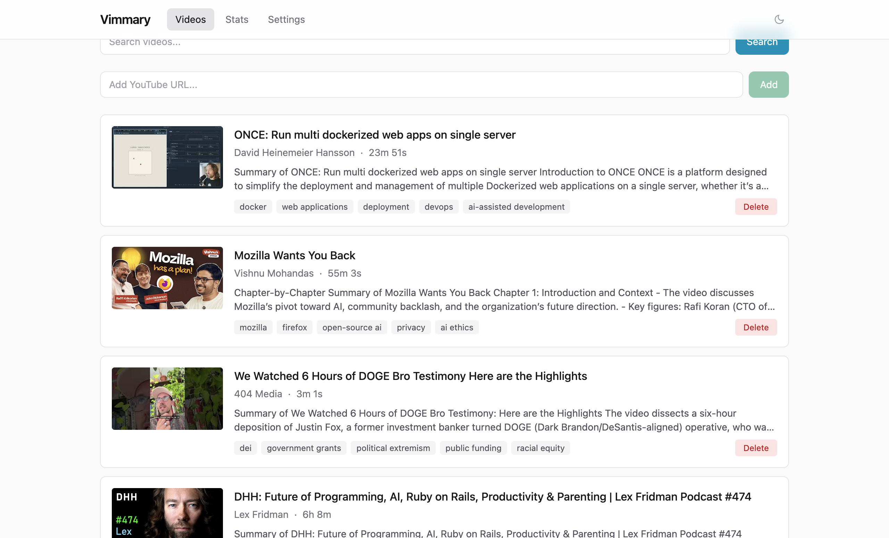
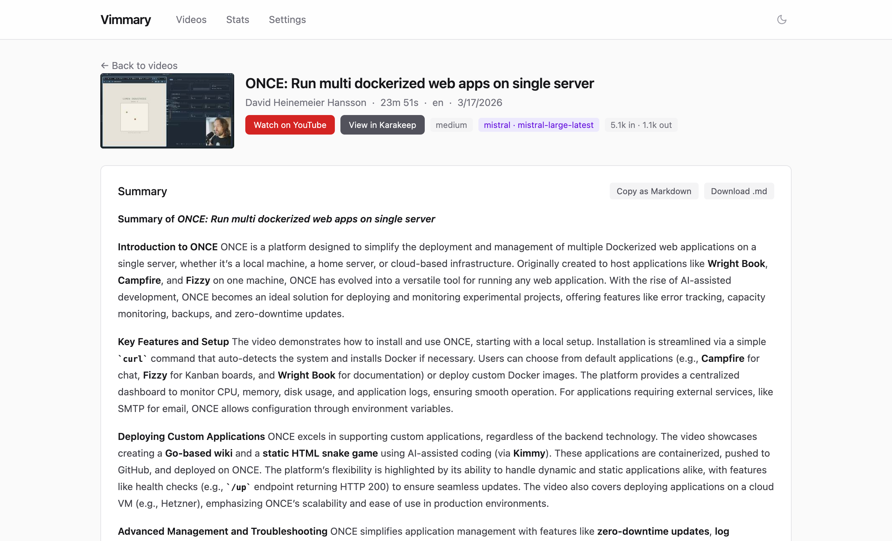
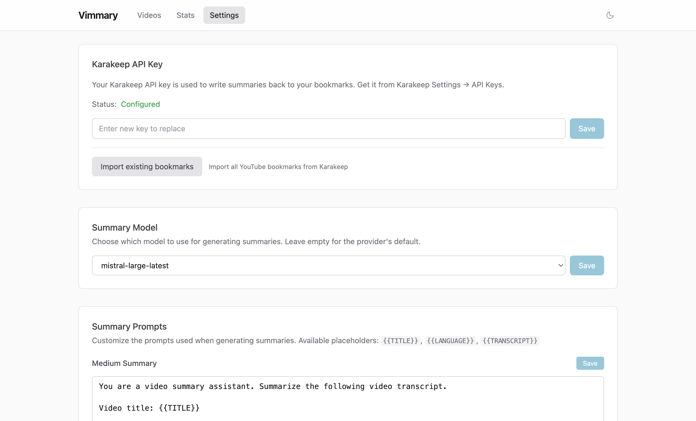
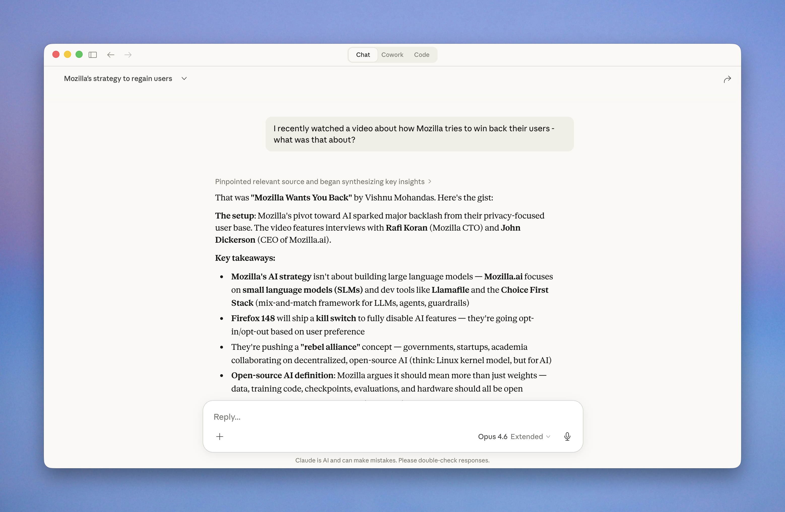

Self-hosted service that fetches transcripts, generates LLM summaries, and lets you search your video library with semantic search. Integrates with Karakeep and MCP.




Generate structured summaries with key points, topics, and action items using Claude or Mistral. Choose between medium and deep detail levels.
Find videos by meaning, not just keywords. Combines semantic vector search with full-text search using Reciprocal Rank Fusion.
Bookmark a YouTube video in Karakeep, get a summary back automatically. Bidirectional sync with webhook support.
6 tools for AI assistants to search, browse, and manage your video summaries. Works with Claude and any MCP-compatible client.
Clean React frontend embedded in a single Go binary. Browse videos, view summaries, manage settings, and submit URLs manually.
Zero-config authentication via tsnet. Multi-user support with per-user video libraries and independent Karakeep configurations.
mistral-embed).mkdir vimmary && cd vimmary
curl -LO https://raw.githubusercontent.com/meltforce/vimmary/main/docker-compose.yml
curl -LO https://raw.githubusercontent.com/meltforce/vimmary/main/config.example.yaml
cp config.example.yaml config.yamlEdit config.yaml and fill in your API keys under the secrets section.
docker compose up -dPulls the image from Docker Hub and starts the app with PostgreSQL + pgvector. Migrations run automatically.
Expose your video library to AI assistants via the Model Context Protocol.
search_videos
Hybrid keyword + semantic search
get_video
Retrieve full video details
list_recent
Browse recent videos
resummarize
Regenerate with different detail
stats
Aggregate statistics
delete_video
Remove a video and its data